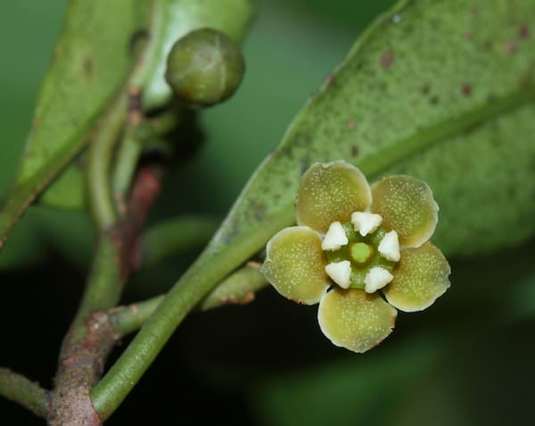

Peacock
Peacocks, sometimes known as peafowl, are medium-sized birds with pheasant-like characteristics. Peacocks are found in the Southern Hemisphere's warm regions. Peacocks are said to have originated in Asia, although they currently live in portions of Africa and Australia. In India, they are the most prevalent. Deserts, arid savannas, woods, and rich vegetation environments are all home to peacocks. The Indian peacock, the African Congo peacock, and the Green peacock are the three primary varieties of peacock. Male peacocks are famed for their beautifully colored feathers and stories in all three peacock species. Female peacocks have a drab brown coloration.
Elephant
Elephants are the world's biggest land animals, with gigantic bodies, large ears, and lengthy trunks. They utilize their trunks for a variety of tasks, including picking up things, trumpeting warnings, greeting other elephants, and sucking up water for drinking or bathing. Male and female African elephants both have tusks, which can be either left or right, and the one they use the most is typically smaller due to wear and tear. Elephant tusks have a variety of uses. Elephants may utilize their expanded teeth to defend their trunks, lift and move items, harvest food, and remove bark from trees. They can also be employed as a defensive mechanism. Elephants also use their tusks to dig holes to get water underground during droughts.
Lionfish
The poisonous fin spines of lionfish are capable of inflicting severe, though rarely deadly, puncture wounds. The fish have longer dorsal fin spines and expanded pectoral fins, and each species has a distinct pattern of vivid, zebra like stripes. When disturbed, the fish spread and expose their fins before presenting and attacking with their dorsal spines if forced further.

Tiger
The tiger is the biggest member of the cat family (Felidae) and is only surpassed in power and ferocity by the lion. The tiger is endangered across its range, which runs from the Russian Far East to the Indonesian island of Sumatra via North Korea, China, India, and Southeast Asia. Tigers (particularly males) are solitary creatures who develop and maintain their own territories, which vary in size and type depending on the amount and distribution of prey, the presence of other tigers in the region, the topography, water availability, and individual features.

Black Mamba
Black mambas are swift, anxious, poisonous, and very aggressive when threatened. They've been blamed for a slew of human fatalities, and African legends magnify their talents to mythical dimensions. The black mamba is commonly regarded as the world's deadliest snake for these reasons. The savannas and rocky slopes of southern and eastern Africa are home to black mambas. They are Africa's longest poisonous snake, reaching lengths of up to 14 feet, however the average length is 8.2 feet. They're also among the world's fastest snakes, capable of crawling at speeds of up to 12.5 mph.

Zebra
Zebras are herd animals who spend time together. They groom one another and graze together, usually on grass. The most frequent zebra species is the plains zebra. They reside in tiny family groupings that include a stallion, several females, and their offspring. These units may band together to form massive herds with tens of thousands of heads, yet family members will remain close within the herd. Lions and hyenas must always be on the lookout for zebras. Many eyes in a herd are vigilant to danger. When an animal is assaulted, its family will defend it by surrounding the injured zebra and attempting to push predators away.
Plants
| Name | Scientific Name | Description | Image |
|---|---|---|---|
| Ceylon Ironwood | Mesua ferrea | Ceylon ironwood (Mesua ferrea), commonly known as Indian rose chestnut, is a tropical tree (family Calophyllaceae) grown for its shape, leaf, and fragrant blossoms in tropical regions. The plant is endemic to India, Indochina, Malaysia, Myanmar, the Philippines, Sri Lanka (previously Ceylon), and Sumatra's moist evergreen forests. It is Sri Lanka's national tree. When thoroughly cooked, the oily seeds are edible, and both the seeds and the blossoms are utilized in traditional medicine in the area. |  |
| Tropical Pitcher Plants | Nepenthes | Tropical Pitcher plants are plants that belong to the Nepenthes family. These plants have vividly colored leaves that are fashioned like pitchers. Insects drawn to the plant by the attractive, vibrant colors are looking for nectar. Any hungry insect, on the other hand, is in for a rude awakening when it realizes it can't get out of the Pitcher Plant's pitcher. This is due to the waxy scales that coat the inside walls of the leaves, making them extremely slippery. Insects that perch on the pitcher are highly likely to slide and fall to the bottom of the pitcher, where they will be bathed in the digestive juices secreted by the plants before they can react. |  |
| Heen Bovitiya | Osbeckia octandra | The eight stamen osbeckia, Osbeckia octandra, is a plant species in the genus Osbeckia of the family Melastomataceae. It is thought to be native to Sri Lanka, where it is known in Sinhala as "Heen Bovitiya." However, other literature claim that it may also be found in India's Tamil Nadu. Fruits are dry capsules containing a large number of seeds. The leaves and young stems are edible, and the leaves, stem, and bark are commonly used in Ayurvedic medicine to treat diabetes, hepatitis, jaundice, and hyperlipidemia. Paracetamol intoxication causes liver damage, and the juice derived from Osbeckia octandra leaves is an effective cure. |  |
| Sleeping Grass | Mimosa pudica linn | Sleeping grass or Nidikumba (Mimosa pudica linn) is a medicinal and therapeutic plant that has been mistaken for a weed due to its various medicinal and therapeutic features. It was found in practically all of Sri Lanka's districts. When ingested, the plant is claimed to provide a calming effect while also repairing some hazardous chemical interactions in your body. |  |
| Kokum | Kokoona zeylanica | Kokoona zeylanica, also known as (Kokun) in Sinhala, is a Celastraceae plant species. Previously, the genus was assigned to the Hippocrateaceae family. It is only found in Sri Lanka. It may be found at both Adam's Peak and Kanneliya. The IUCN has classified the species as endangered. The kokun tree is a huge, grey-barked tree. From March through May, it blooms. The kokun is a medicinal plant that has been used for centuries to treat a variety of ailments. This plant's seed oil is excellent as a leech repellant. Jewellers have used the inner bark as a polish. |  |
| Gordonia speciose | Polyspora gardneri | Polyspora gardneri, formerly Gordonia speciosa, is a critically endangered Theaceae species. Gordonia speciosa is an indigenous tree native to Sri Lanka's montane zone. Gordonia species are all native to Sri Lanka and only found in the central hills. This species is in jeopardy of extinction since it can only be found in a single site with less than a hundred trees. |  |
Table-Plants |